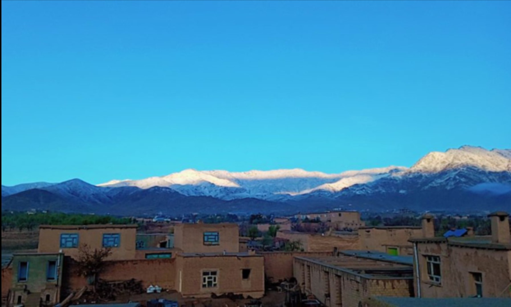
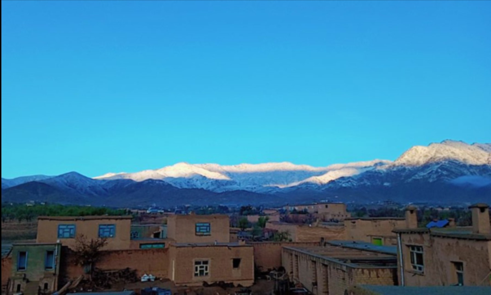

هوای بهار در جاغوری یک تجربه ول انگیز و شگفت انگیز است در این فصل دمایی هوا معمولا بین ۱۵ تا ۲۵ درجه سانتیگراد در نوسان است که بسیار مطبوع و دل پذیر است بهار در جاغوری تسیم های زیبا با عطر گلهای تازه شگفته حس از تجدید حیاط و طراوت به همه جا میبخشد و نوازش میکند درختان به تدریج جوانه میزنند شگوفه ها به رنگ های زیبا و متنوع در می اییند دشت ها و تپه ها رنگ سبز به خود میگیرند . صبح ها معمولا هوا تازه و خنک است که نسیم ملایم صورت تان را نوازش میکند .
بهار در جاغوری ،همچون نقاشی است که هر رنگش داستانی از طبیعت و تراوت زندگی را روایت میکند . بهار در جاغوری با نسیم های ملایم و گل های رنگارنگ ، همچون بوسه ای از طبیعت است که زمین را به رندگی دوباره دعوت میکند .جاغوری در بهار همچون بهشتی زمینی است ؛ دشت ها کوه ها پوشیده از سبزه و گل ، در دل طبیعت بیدار شده ، تنفس میکنند .آسمان آبی و درختان شگوفه زده در بهار بهار جاغوری مثل نقاشی از دست خداوند است که هر گوشه اش بویی از شادابی می دهند. بهار در جاغوری در دل کوهستان همراه با آوای پرنده گان و عطر گلها روح انسان را آرامش میبخشد و زندگی را در رنگهای تازه تر میبیند . در بهار جاغوری گل ها در دل خاک شکفته و به دشتهای سرسبز جان تازه ای میدهند گوی طبیعت در این فصل با زندگی دوباره ای پر از شوق بیدار میشود صدای آبهای جاری و زنبور ها هماهنگی کامل با زیبایی های طبیعت را خلق میکند و احساس زندگی در هر لحظه جاری است .
تابستان در جاغوری به دلیل موقعیت کوهستانی و موقعیت بالای این منتقه برخلاف بسیاری از مناطق دیگر معمولا دمای خیلی بالا ندارد و هوا به طور کلی معتدل و دلپذیر است در تابستان دمایی هوا در جاغوری بین ۲۵ تا ۳۵ درجه سانتیگراد نوسان دارد اما به دلیل ارتفاع زیاد جاغوری از سطح دریا گرمای تابستان کمتر احساس میشود . شب ها در تابستان جاغوریبه دلیل ارتفاع زیاد دمایی هوا معمولا پایین می آید و هوای خنک و راحتی را به همراه دارد که برای خوابیدن در بیرون یا شب نشینی های خانوادگی بسیار مناسب است
تابستان در جاغوری فصلی است که گرما در دل طبیعت زیبایی خاص خود را دارد جاغوری به دلیل ارتفاع زیاد از دریا گرما را به شکل ملایم و قابل تحمل به نمایش میگذارد هوای خنک و آرامش بخش که میتوانیم باد های ملایم کوه هارا قشنگ حس کنیم در این ساعات طبیعت بیدار میدار میشود و پرندگان با آواز خود فضا را پر از سرزندگی میکند اما به تدریج دمایی هوا بالا میرود گرچه هنوز هم برخلاف بسیاری از مناطق دیگر این گرما آزار دهنده نیست . ظهر های تابستان جاغوری با نور طلایی خورشید و هوای نسبتا گرم فضا را به یک تجربه خاص تبدیل میکند اما به محض غروب باد های خنک از دامنه ک.ه ها شروع به وزیدن میکنند و شب ها که فرا میرسد دمایی هوا پایین می آید و آرامش شب های جاغوری فضایی دلپذیر و خنک به ارمغان میآورد که میتوانید در آن زیر آسمان پر ستاره یک راحتی خاصی را احساس کنید در تابستان جاغوری بجز گرمای ملایم آنچه بیشتر از همه به چشم می آید زیبایی بی نظیر طبیعت است کوه های سرسبز و دشت های پر گل در کنار آسمان آبی مناظر خاصی ایجاد میکند. در این فصل دشت ها و دره ها به رنگ سبز در می آیند و منظره زیبا و آرامش بخش به وجود می آید هوا اگرچه گاهی گرم است اما در مقایسه با بسیاری از مناطق دیگر به دلیل شرایط خاصی جغرافیایی تابستان در جاغوری به تجربه خاصی تبدیل می شود که تابستان جاغوری را از دیگر فص.ل این منطقه متفاوت و خاص میسازد


 



در فصل زمستان جاغوری به دلیل موقعیت کوهستانی و ارتفاع بالای خود معمولا دمایی سرد و خشک را تجربه میکند اما در روز های آفتابی زمستان ممکن است دمای هوا به حدود ۱۰ تا ۱۵ درجه سانتیگراد برسد . در این روزها درحالیکه برف هنوز روی زمین نشسته و کوها را پوشانیده خورشید از پشت ابر ها خود را به نمایش می گذارد و دمایی هوا کمی بالاتر میرود . در این روزهای زمستانی جاغوری به یک معجزه زمستانی تبدیل میشود وقتی آفتاب بر زمین میتاید دمای هوا به اندازه ملایم میشود که میتوان برای مدتی از آن هوای زیبا لذت برد این کرمای کوتا و دلپذیر درکنا برف های سفید و کوه های سر به فلک کشیده زیبایی خاصی به منظره میبخشد.
هوای برفی جاغوری،همچون تکه ای از بهشت زمینی است که در دل کوه ها پنهان شده. وقتی که برف نرم سفید بر دمنوش های کوهستان مینشند ، همه جاآرام و ساکت می شود . هوای سرد و تازه اش ، نفس هارا به گونه ای میسازد که انکار همه جیز دوباره زنده میشود . هر دانه برف که به زمین میرسد ، گویی یک قصه ای تازه را روایت میکند . در این سرزمین برفی ،سکوت تنها از صدای قدم های تان در برف شکسته میشود و منظره های زیبا کوه های پوشیده از برف ، همچون تابلو های هنری زهده میدرخشند ، جاغوری در زمستان ، جای است که میتوان در دل زیبایی های بیکران طبیعت غرق شد و لحظاتی پر از آرامش و تجدید روح پیدا کرد هوای برفی جاغوری در زمستان انگار داستانی است که تنها با چشم های خود باید دید . وقتی برف شروع به باریدن میکند ، همه چیز در دنیای سفید و خاموش غرق میشود . کوه ها به مانند نگهبانانی آرام در میان مه و برف ایستاده اند و رود خانه ها در دل برف ، به آرامی به سفرشان ادامه می دهند . در این هوای سرد و برفی ، خانه های ساده و دلنشین جاغوری در کنار یکدیگر همچون یک تصویر از صمیمیت و نزدیکی انسانها به هم هستند . بخاری های چوبی در دل خانه ها روشن است و گرمای شان در دل سرمای بیرون ، امید و زندگی می بخشد . هوای برفی جاغوری حس ویژه ای دارد ، گویی هر لحظه به یادگیری و لمس طبیعت و زندگی می پردازید . در این فضا انسانها با خود و محیط اطرافشان هماهنگ میشوند و در عین سادگی ، زیبای های بی پایانی در برابر چشمهای شان نمایان می شود. :)